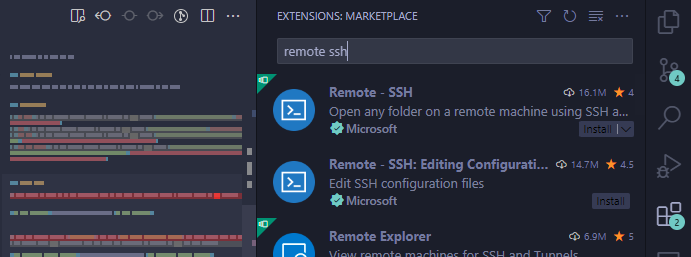
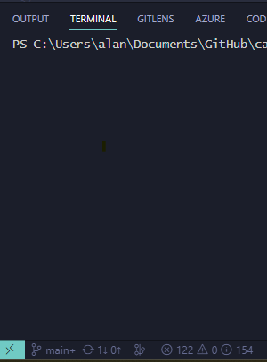
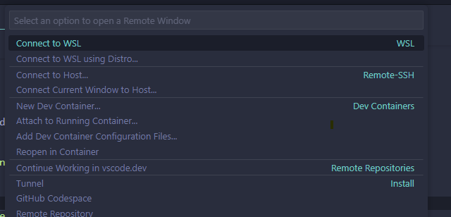
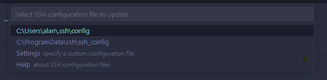
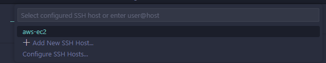
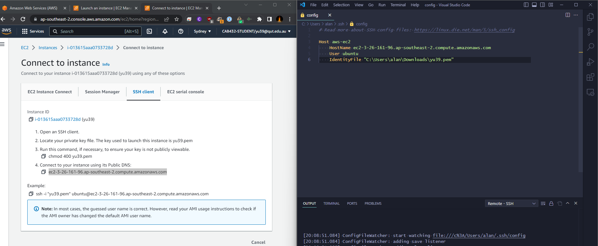
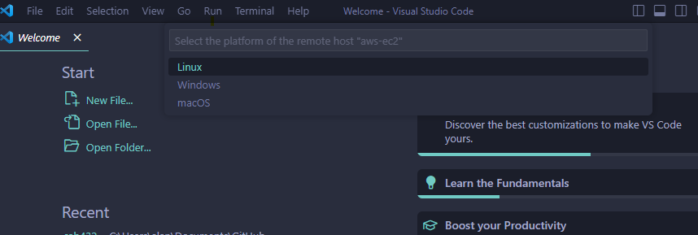
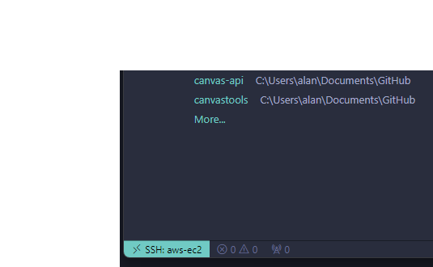

This guide will show you how to set up the IDE VS code to code & connect to our VM's.

><)



Host aws-e2
HostName <your-ec2-ip-address>
User ec2-user
IdentityFile ~/.ssh/labsuser.pem

><). Now Connect to host to your new SSH host.


Access Denied Exception: If you alt tab away when selecting the OS / Accepting thumbprint, the remote connection will fail.
Access Denied Exception: If you get this error it is most likely that the tag you entered during build of the VM does not match your IAM user profile name. Create a new instance ensuring the qut-username tag is identical to your IAM user profile name. As a cleanup exercise please post Teams 'please delete my faulty VM instance id is xxxxxxxxx'.